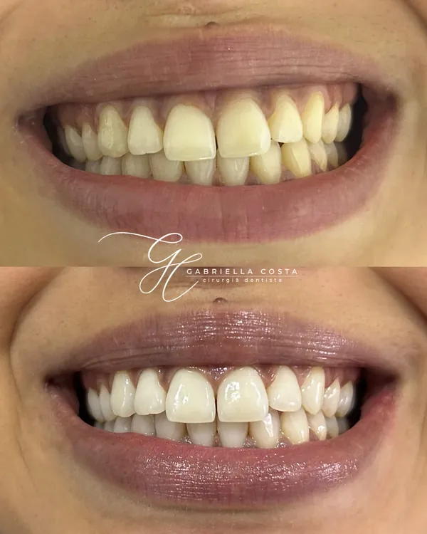

Odontologia
- Limpeza dental, perguntar pelo WhatsApp
- Clareamento dental, perguntar pelo WhatsApp
- Facetas, perguntar pelo WhatsApp
- Alongamento de caninos, perguntar pelo WhatsApp
- Tratamento de canal, perguntar pelo WhatsApp
- Implantes dentários, perguntar pelo WhatsApp
- Dentaduras e pontes, perguntar pelo WhatsApp
- Aparelhos fixos e invisíveis, perguntar pelo WhatsApp
- Cirurgias, perguntar pelo WhatsApp
- Odontopediatria, perguntar pelo WhatsApp
- Sedação consciente, perguntar pelo WhatsApp
- Tratamento de bruxismo, perguntar pelo WhatsApp
- Protetor bucal, perguntar pelo WhatsApp